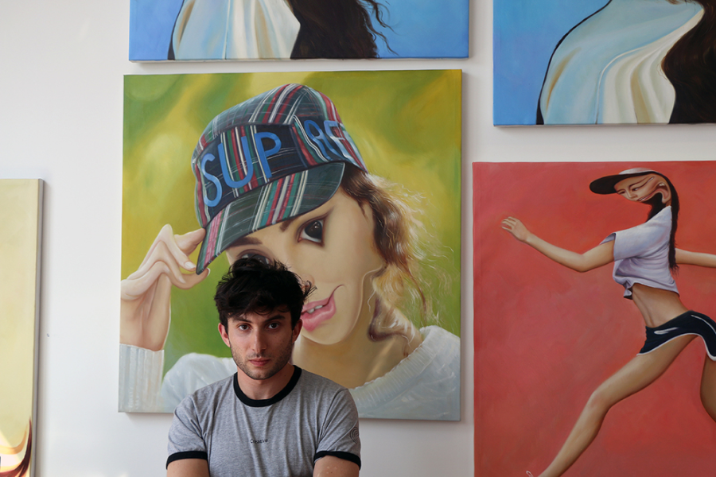

Биография
Концептуальный художник, названный газетой Нью-Йорк Таймс «воплощением интернет-крутана, так же умеловладеющего HTML и JavaScript, как и языком концепт-арта».
Родился в Нью-Йорке в 1986 году. Его родители — близкие друзья Энди Уорхола — дизайнер Хелен Верин и художник Родни Риппс.
Окончил программу новых медиа в университете The New School в 2008. Работы Райдера Рипса выставлялись в MoMa PS1, Eyebeam, Carroll/Fletcher и Royal College of Art
Райдер Риппс — создатель нескольких вебсайтов, включая Internet Archeology, Dump.fm, Been Trill и VFiles.
Хо
Сольная выставка работ Райдера Риппса под названием «ХО» состоялась в январе 2015 в Postmasters Gallery в Нью-Йорке.
Она включала написанные масляными красками картины, источником для которых послужил инстаграм сотрудничающей со спортивными брендами фитнес-модели Адрианны Хо.
Райдер трансформировал ее селфи в карикатурные портреты с сильно искаженными и утрированными чертами.
Фотографии Хо сначала были отредактированы Райдером в фотошопе, а затем специально нанятые им
профессиональные художники перенесли цифровые изображения на двухметровые холсты.
Одиноки вместе
В «Одиноки вместе» Райдер воссоздал микрокосм интернета и обратил внимание на парадокс — чем больше мы
сближаемся онлайн, тем более очужденно мы ощущаем себя в реальном мире. В центре инсталляции был
прозрачный бокс с юзерами, создающими ленту контента для смотровой кабины с кнопкой лайка.
Все шестеро главных участников были наняты через сайт Craigslist по объявлению «Вы хотите заработать на
деньги за сидение в сети как исскусство?» и отобраны так, чтобы представлять уникальные аспекты
использования интернета. Им была выдана одинаковая форма и свой кубикл с креслом и компьютером.
Ссылки
На сайте использована информация из Википедии и личной страницы Райдера Риппса. Сделано в 2022 году.